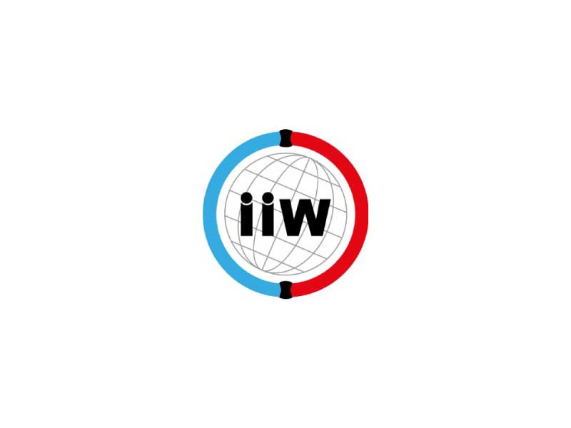

Welding Courses
Develop The Skills To Lead In Welding Coordination.
The Welding Academy offers internationally recognised welding qualifications designed to equip professionals with the technical knowledge, practical expertise, and leadership skills required to excel in the welding industry.
International Welding Specialist (IWS)
Take the next step in your welding career. The IWS programme is built for experienced welders, welding practitioners, inspectors, and supervisors ready to move into welding coordination and management roles. At TWA, you’ll gain the practical skills and internationally recognised knowledge needed to supervise welding operations, apply quality assurance principles with confidence, qualify welding personnel and procedures, and coordinate welding activities to the highest industry standards. Whether you’re advancing within your current role or preparing for new opportunities across South Africa’s industrial, energy, and manufacturing sectors, IWS gives you the credentials employers trust.
International Welding Technologist (IWT)
The International Welding Technologist (IWT) programme is intended for professionals seeking to advance their expertise in welding coordination, quality management, and technical leadership. It is ideal for International Welding Specialists (IWS) wishing to further their careers, as well as individuals with a Matric (National Senior Certificate) including Mathematics and Physical Science who wish to pursue a professional career in welding technology. The programme develops the advanced knowledge and competencies required to manage complex welding operations, implement welding quality systems, and lead welding teams within engineering and manufacturing environments.
IWS Course Requirements
Completion of the training program will enable personnel to manage, at a standard level, welding activities such as supervision, problem identification and resolution, oversight and quality assurance management.
- The recommended minimum age is 20 years.
- A senior certificate (Matric, N3) and a minimum of 2 years of job related experience is required.
- OR
- Hold a General Education and Training Certificate (GETC – Grade 9) plus 5 years relevant metal working experience.
The program improves students welding knowledge by empowering them with scientific principles behind welding techniques. Candidates not meeting the above educational requirements will still be able to access the course through artisan qualification and experience.
IWT Course Requirements
The course is for people who have experience as an IWS and wish to further their careers and knowledge, it’s also for people involved or wishing to start a career in welding and have an engineering education of at least an N6 diploma.
The training is meant to equip students with a higher level of knowledge on welding by going into further detail on scientific principles which guide the consistent reproduction of high quality welds.
- National senior certificate / Matric with Maths and Science
- OR
- Higher Education in Engineering or Science
- OR
- IWS diploma with 6 years work experience as a Welding Coordinator at an appropriate level within 8 years after receiving the IWS diploma.

TWA Welding Assistance
Learn. Understand. Succeed.
At The Welding Academy, we understand that welding codes, procedures, and technical concepts can be challenging. With years of experience delivering training in Welding Inspection, International Welding Specialist (IWS), International Welding Technologist (IWT), and other specialised welding programmes, we know how to simplify complex topics into practical, easy-to-understand concepts.
Our assistance is designed to strengthen your understanding, build your confidence, and help you achieve success in your studies and professional development. Whether you’re preparing for closed-book examinations, open-book assessments, or practical evaluations, our experienced lecturers provide the guidance and support you need every step of the way.
We also offer specialised assistance in understanding and applying internationally recognised welding codes and standards, including:
- ASME Section IX
- AWS D1.1
- ISO 15614
- ISO 5817
- and other industry standards.
At TWA, your success is our greatest achievement. We’re committed to helping you build the knowledge, confidence, and technical competence needed to excel in the welding industry.
International Institute of Welding
The IIW was formed in 1948 and South Africa was one of the founding member states. Currently it has over 50 member countries including South Afica. The IIW offers training programs which are offered in all member states to the same level so that qualifications are across each the nations are the same. These training programs include the IWS and IWT qualifications. Those who successfully complete these programs are issued qualifications which are internationally recognized.
The Welding Academy is an approved training provider of the IWS and IWT training within South Africa and those successfully completing the training and exams will be issued the same qualifications as all other people who have attained the qualification from any other approved training body in South Africa.
